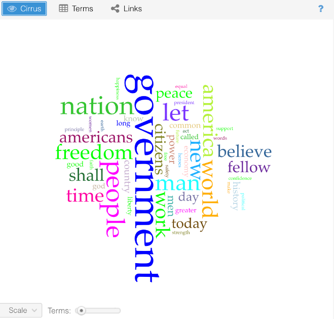

George Washington
A short historical point of reference.
Read the text ↗A digital humanities text analysis
How does the language of an inaugural address change when the historical moment changes? I used Voyant Tools to explore word patterns in speeches from 1793, 1801, 1981, and 2009.
01 / The project
Presidents address the country at moments of transition. Although all four speeches belong to the same genre, they were written for different audiences and circumstances. My central question is: How do Jefferson, Reagan, and Obama differ in their language about government, national identity, and shared responsibility?
I added Washington's brief 1793 address as extra historical context. The closer comparison focuses on three speeches—Jefferson (1801), Reagan (1981), and Obama (2009).
A short historical point of reference.
Read the text ↗Main comparison: principles and government.
Read the text ↗Main comparison: government and national identity.
Read the text ↗Main comparison: national renewal.
Read the text ↗02 / Voyant screenshots
These are captures from my four-document Voyant corpus. Each visualization shows something different: which words are common overall, and how their use varies by speech.


Source: Voyant Tools, Summary panel. Counts reflect its current corpus and settings.
03 / Comparison
The word frequencies give clues about recurring themes. Reading the words in context helps clarify what they mean.
Voyant identifies principle (6 appearances) and opinion (4) as relatively distinctive terms. His speech repeatedly discusses political disagreement and the principles of government. In one passage he refers to a “wise and frugal Government,” showing why counting the word government alone cannot explain his argument.
Reagan uses government frequently, and Voyant highlights americans (9) and national (5) as distinctive words. Reading the passages around government shows that he discusses its limits, responsibilities, and relationship to citizens. The frequency is interesting because it points toward a recurring subject, not necessarily approval of that subject.
Voyant highlights new (11) and spirit (5) as distinctive words in Obama's speech. His use of nation is also prominent in the Trends visualization. These patterns suggest an emphasis on collective identity and national renewal, which is worth investigating through repeated phrases and the surrounding sentences.
Washington's 1793 address contains only 135 words, compared with 1,730 in Jefferson's, 2,436 in Reagan's, and 2,399 in Obama's, according to Voyant. A single appearance can look unusually important in such a short text. For comparisons, the relative-frequency graph is more useful than raw word totals. Repeated vocabulary also cannot prove a speaker's intentions or explain later political outcomes.
05 / Sources and tools
All four primary texts are drawn from the course's public GitHub collection. The interactive Voyant corpus can be explored separately from the static screenshots shown on this page.
The figures show an exploratory reading of texts with computer-assisted analysis. Word counts, the author's interpretation, and the historical speeches should be examined together.